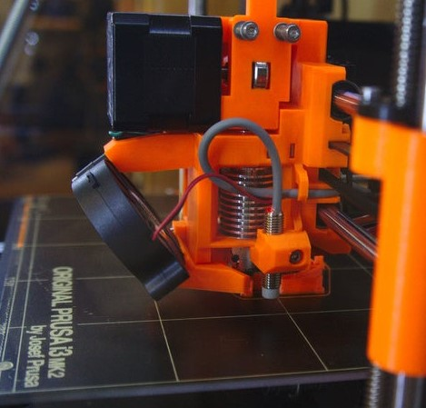

recomendación
impresión
La impresión 3d es la piedra angular de este proyecto, es importante considerar ciertos aspectos a la hora de su implementación. Se recomienda usar una impresora de extrusión directa, preferentemente una en la que se pueda recargar filamento en cualquier punto de la impresión. El modelo está diseñado para imprimirse siguiendo ciertas características estructurales como de diseño, para poder incorporar el filamento flexible se dispone de la pieza en posición vertical, perpendicular al punto donde converge la forma, correspondiente al frontal de la boquilla. Dada la posición de impresión, se recomienda generara una amplia base de soporte, para evitar despegues como errores en el proceso de impresión.
variaciones
Del concepto desarrollado, que involucra una serie de características y elementos constituyentes, podemos llegar a alteraciones del modelo, algunas de carácter más robusto, para su implementación como elemento de seguridad y de despliegue, otra versión puede tan solo cubrir la boca y realizarse en su totalidad o parcialmente con los elementos descritos.

materialidad
La utilización de distintas materialidades, sustenta la base del diseño y permite la creación de una propuesta eficiente. El uso de estos elementos puede verse alterada en beneficio de mejorar aún más el concepto, filamentos como filaflex, pla plus, fibra de carbono, etc. responderán a las características y nivel de calidad que el usuario quiera conferirle.
complemento
El conjunto se completa con la incorporación del filtro de carbón activado.